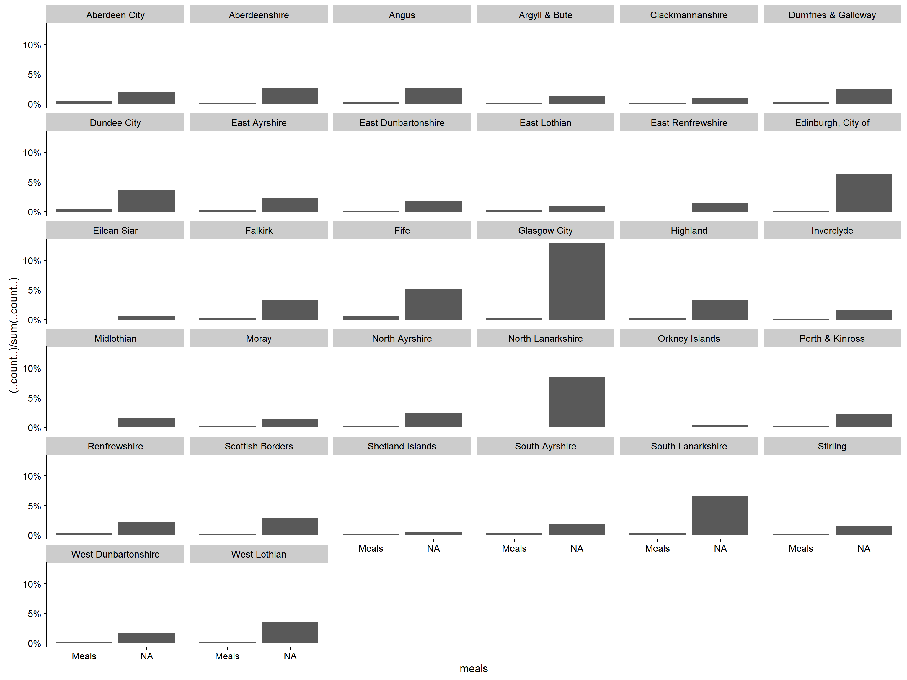

Last updated: 2018-02-01
Code version: 3986eda
On this page I show how to import and tidy the three years of open data
Load required packages
library(tidyverse)
library(magrittr)
library(forcats)
library(cowplot)I’ve downloaded the data files (see home page) into the “data” project folder and I’ll imort them into R now. If you are copying the code you will need to set the file paths relative to your system.
soc_care10 <- read_csv("...~/data/public_release_sc_2010.csv")
soc_care11 <- read_csv("...~/data/public_release_sc_2011.csv")
soc_care12 <- read_csv("...~/data/public_release_sc_2012.csv")Let’s start by looking at each set of data
glimpse(soc_care10)Observations: 76,202
Variables: 19
$ LAcode <int> 100, 100, 100, 100, 100, 100, 100, 100, 100,...
$ clientID <chr> "ZZXJX", "VLKT8", "418H1", "7SF1N", "TKCFN",...
$ AgeGRP <int> 5, 4, 3, 4, 3, 3, 3, 3, 3, 5, 1, 4, 3, 4, 3,...
$ ClientGRP <chr> ".", "4", "4", "4", "4", "4", "4", "4", "4",...
$ GenderISO <chr> ".", "1", "1", "1", "1", "2", "1", "1", "1",...
$ meals <int> 1, 1, 0, 0, 0, 1, 0, 0, 0, 1, 0, 1, 0, 0, 0,...
$ bandHRSLA <int> 0, 0, 0, 0, 0, 0, 0, 0, 5, 0, 0, 0, 2, 7, 0,...
$ bandHRSpri <int> 0, 3, 5, 5, 8, 8, 3, 4, 0, 0, 3, 7, 0, 7, 5,...
$ bandHRSvol <int> 0, 0, 0, 0, 0, 0, 0, 0, 0, 0, 0, 0, 0, 0, 0,...
$ bandHRSPC <int> 0, 0, 0, 0, 0, 0, 0, 0, 0, 0, 0, 0, 0, 0, 0,...
$ bandHRSTT <int> 0, 3, 5, 5, 8, 8, 3, 4, 5, 0, 3, 7, 2, 9, 5,...
$ HCclient <int> 0, 1, 1, 1, 1, 1, 1, 1, 1, 0, 1, 1, 1, 1, 1,...
$ LivingArr <int> 0, 9, 2, 1, 1, 1, 9, 9, 2, 0, 2, 1, 1, 2, 2,...
$ Staff <int> 0, 0, 0, 0, 0, 0, 0, 0, 0, 0, 1, 0, 0, 0, 0,...
$ HousingType_OV <int> 0, 0, 0, 0, 0, 0, 0, 0, 0, 0, 0, 0, 0, 0, 0,...
$ Laundry_OV <int> 0, 0, 0, 0, 0, 0, 0, 0, 0, 0, 0, 0, 0, 0, 0,...
$ Shopping_OV <int> 0, 0, 0, 0, 0, 0, 0, 0, 0, 0, 0, 0, 0, 0, 0,...
$ HousingSupport_OV <int> 0, 0, 0, 0, 0, 0, 0, 0, 0, 0, 0, 0, 0, 0, 0,...
$ IoRN_OV <chr> NA, NA, NA, NA, NA, NA, NA, NA, NA, NA, NA, ...glimpse(soc_care11)Observations: 142,466
Variables: 22
$ LAcode <int> 100, 100, 100, 100, 100, 100, 100, 100, 1...
$ clientID <chr> "17L9J", "3Z8FK", "BKKAY", "8BT1I", "XMH3...
$ AgeGRP <int> 3, 4, 3, 3, 3, 4, 4, 3, 3, 4, 2, 3, 3, 3,...
$ ClientGRP <int> 4, 4, 1, 1, 4, 4, 4, 4, 4, 4, 1, 4, 4, 4,...
$ GenderISO <int> 2, 2, 2, 2, 1, 1, 2, 1, 2, 2, 2, 1, 2, 2,...
$ meals <int> NA, NA, NA, 1, NA, NA, NA, NA, NA, NA, NA...
$ bandHRSLA <int> 0, 0, 0, 0, 0, 0, 0, 0, 8, 1, 0, 0, 0, 0,...
$ bandHRSpri <int> 0, 0, 0, 0, 2, 5, 4, 8, 0, 0, 0, 0, 3, 5,...
$ bandHRSvol <int> 0, 0, 0, 0, 0, 0, 0, 0, 0, 0, 0, 0, 0, 0,...
$ bandHRSPC <int> 0, 0, 0, 0, 2, 5, 4, 8, 8, 1, 0, 0, 3, 5,...
$ bandHRSTT <int> 0, 0, 0, 0, 2, 5, 4, 8, 8, 1, 0, 0, 3, 5,...
$ HCclient <int> 0, 0, 0, 0, 1, 1, 1, 1, 1, 1, 0, 0, 1, 1,...
$ communityalarmonly <int> 0, 1, 1, 0, 0, 0, 1, 1, 0, 0, 0, 1, 1, 0,...
$ telecareonly <int> 1, 0, 0, 0, 0, 0, 0, 0, 0, 0, 1, 0, 0, 0,...
$ communityandtelecare <int> 0, 0, 0, 0, 0, 0, 0, 0, 0, 0, 0, 0, 0, 0,...
$ LivingArr <int> 9, 2, 9, 9, 9, 1, 1, 1, 9, 9, 2, 9, 1, 2,...
$ Staff <int> 0, 0, 0, 0, 0, 0, 0, 0, 1, 0, 0, 0, 0, 1,...
$ HousingType_OV <int> 0, 0, 0, 0, 0, 0, 0, 0, 0, 0, 0, 0, 0, 0,...
$ Laundry_OV <int> 0, 0, 0, 0, 0, 0, 0, 0, 0, 0, 0, 0, 0, 0,...
$ Shopping_OV <int> 0, 0, 0, 0, 0, 0, 0, 0, 0, 0, 0, 0, 0, 0,...
$ HousingSupport_OV <int> 0, 0, 0, 0, 0, 0, 0, 0, 0, 0, 0, 0, 0, 0,...
$ IoRN_OV <chr> NA, NA, NA, NA, NA, NA, NA, NA, NA, NA, N...glimpse(soc_care12)Observations: 141,144
Variables: 26
$ LAcode <int> 100, 100, 100, 100, 100, 100, 100, 100, 1...
$ clientID <chr> "HRXYJ", "U61VU", "XP2LW", "3VXIH", "4CC3...
$ AgeGRP <int> 3, 4, 3, 3, 4, 3, 4, 2, 3, 4, 3, 1, 3, 4,...
$ ClientGRP <int> 4, 4, 1, 4, 4, 4, 4, 1, 4, 4, 4, 1, 4, 4,...
$ GenderISO <int> 2, 2, 2, 1, 1, 2, 2, 2, 1, 2, 2, 1, 1, 2,...
$ meals <int> NA, NA, 1, NA, NA, NA, NA, NA, NA, NA, NA...
$ error1 <chr> NA, NA, NA, NA, NA, NA, NA, NA, NA, NA, N...
$ error <chr> NA, NA, NA, NA, NA, NA, NA, NA, NA, NA, N...
$ newhours <int> NA, 2, NA, 3, 7, 18, 1, NA, NA, 3, 7, NA,...
$ HCFlag <int> 0, 1, 0, 1, 1, 1, 1, 0, 0, 1, 1, 0, 1, 0,...
$ bandHRSLA <int> 0, 0, 0, 0, 0, 8, 1, 0, 0, 0, 5, 0, 0, 0,...
$ bandHRSpri <int> 0, 3, 0, 3, 5, 0, 0, 0, 0, 3, 0, 0, 6, 0,...
$ bandHRSvol <int> 0, 0, 0, 0, 0, 0, 0, 0, 0, 0, 0, 0, 0, 0,...
$ bandHRSPC <int> 0, 3, 0, 3, 5, 8, 1, 0, 0, 3, 5, 0, 6, 0,...
$ bandHRSTT <int> 0, 3, 0, 3, 5, 8, 1, 0, 0, 3, 5, 0, 6, 0,...
$ HCclient <int> 0, 1, 0, 1, 1, 1, 1, 0, 0, 1, 1, 0, 1, 0,...
$ communityalarmonly <int> 0, 1, 0, 0, 0, 0, 0, 0, 1, 1, 0, 1, 1, 1,...
$ telecareonly <int> 1, 0, 0, 0, 0, 0, 0, 1, 0, 0, 0, 0, 0, 0,...
$ communityandtelecare <int> 0, 0, 0, 0, 0, 0, 0, 0, 0, 0, 0, 0, 0, 0,...
$ LivingArr <int> 9, 2, 9, 9, 1, 9, 9, 2, 9, 1, 1, 9, 1, 9,...
$ Staff <int> 0, 0, 0, 0, 0, 1, 0, 0, 0, 0, 0, 0, 0, 0,...
$ HousingType_OV <int> 0, 0, 0, 0, 0, 0, 0, 0, 0, 0, 0, 0, 0, 0,...
$ Laundry_OV <int> 0, 0, 0, 0, 0, 0, 0, 0, 0, 0, 0, 0, 0, 0,...
$ Shopping_OV <int> 0, 0, 0, 0, 0, 0, 0, 0, 0, 0, 0, 0, 0, 0,...
$ HousingSupport_OV <int> 0, 0, 0, 0, 0, 0, 0, 0, 0, 0, 0, 0, 0, 0,...
$ IoRN_OV <chr> NA, NA, NA, NA, NA, NA, NA, NA, NA, NA, N...We can see in 2010 there are 76202 observations of 19 variables. 2011 has 142466 observations of 22 variables and 2010 has 141144 observations of 26 variables.
The reason for the discrepancies in observations is that 2011 and 2012 data contains information on individuals who received not just home care, but also telecare which almost doubles the number of people included.
3 telecare variables are added in 2011. In 2012 these 3 variables are present plus an extra variable newhours. There are also 3 unneeded variables in 2012; error, error1, and HCFlag. The first two are self-explanatory. The third is a duplicate of the HCclient variable. I’ll drop these now before we start to tidy.
soc_care12 %<>%
select(-error, -error1, -HCFlag) With the exception ofclientID in each year, every variable needs coerced. The majority of these variables should be factors. I could re-import the data and try stringsasFactor == TRUE. I’m not so sure this would work and, anyhow, I want to explicitly name the labels for the factors.
1st of all though, we’ll sort out the variable names.
#different number of coulmns in each year so requires seperate commands
names(soc_care10) <- c("council", "client_id", "age_grp", "client_grp", "gender", "meals",
"la_hrs", "pri_hrs", "vol_hrs", "pc_hrs", "total_hrs", "hc_client",
"living_arr", "multi_staff", "housing_type", "laundry", "shopping",
"housing_supp", "iorn_score")
names(soc_care11) <- c("council", "client_id", "age_grp", "client_grp", "gender", "meals",
"la_hrs", "pri_hrs", "vol_hrs", "pc_hrs", "total_hrs", "hc_client",
"comm_alarm", "other_telecare", "alarm_and_tele", "living_arr",
"multi_staff", "housing_type", "laundry", "shopping",
"housing_supp", "iorn_score")
names(soc_care12) <- c("council", "client_id", "age_grp", "client_grp", "gender", "meals",
"new_hrs", "la_hrs", "pri_hrs", "vol_hrs", "pc_hrs", "total_hrs",
"hc_client", "comm_alarm", "other_telecare", "alarm_and_tele",
"living_arr", "multi_staff", "housing_type", "laundry", "shopping",
"housing_supp", "iorn_score")I’ll coerce each in order here. I’m being explicit so I can set the labels for each factor level. All labels and levels identified from the metadata file.
age_grp has been imported as an integer - factorise. I’ll also convert missing data level to NA
age_grp_levels = c("1", "2", "3", "4", "5")
age_grp_labels <- c("18-<65", "65-<75", "75-<85", "85+", "Unknown")
#2010
soc_care10$age_grp <- factor(soc_care10$age_grp,
levels = age_grp_levels,
labels = age_grp_labels)
soc_care10$age_grp[soc_care10$age_grp == "Unknown"] <- NA #Convert Missing data to NA
soc_care10$age_grp <- fct_drop(soc_care10$age_grp, only = "Unknown") #Drop unknown level
#2011
soc_care11$age_grp <- factor(soc_care11$age_grp,
levels = age_grp_levels,
labels = age_grp_labels)
soc_care11$age_grp[soc_care11$age_grp == "Unknown"] <- NA #Convert missing data to NA
soc_care11$age_grp <- fct_drop(soc_care11$age_grp, only = "Unknown")
#2012
soc_care12$age_grp <- factor(soc_care12$age_grp,
levels = age_grp_levels,
labels = age_grp_labels)
soc_care12$age_grp[soc_care12$age_grp == "Unknown"] <- NA #Convert Missing data to NA
soc_care12$age_grp <- fct_drop(soc_care12$age_grp, only = "Unknown")And another sanity check
fct_count(soc_care10$age_grp) #Count factor levels as diagnostic check# A tibble: 5 x 2
f n
<fct> <int>
1 18-<65 12297
2 65-<75 10219
3 75-<85 23248
4 85+ 22499
5 <NA> 7939fct_count(soc_care11$age_grp)# A tibble: 5 x 2
f n
<fct> <int>
1 18-<65 23085
2 65-<75 22897
3 75-<85 49857
4 85+ 43228
5 <NA> 3399fct_count(soc_care12$age_grp)# A tibble: 5 x 2
f n
<fct> <int>
1 18-<65 23755
2 65-<75 22861
3 75-<85 49495
4 85+ 43689
5 <NA> 1344#remove unneeded objects from memory
rm(list = c("age_grp_labels", "age_grp_levels"))client_grp came in as an integer for 2010 but as a character for 2011 and 2012. I will recode them all to factors and add the labels. There are two missing data levels here! Both to NA
client_grp_levels <- c("1", "2", "3", "4", "5", "99", ".")
client_grp_labels <- c("Dementia & Mental Health", "Learning Disability",
"Physical Disability", "Infirmity due to Age","Other",
"Not Known", "Blank")
#2010
soc_care10$client_grp <- factor(soc_care10$client_grp,
levels = client_grp_levels,
labels = client_grp_labels)
soc_care10$client_grp <- fct_collapse(soc_care10$client_grp,
missing = c("Not Known", "Blank"))
soc_care10$client_grp[soc_care10$client_grp == "missing"] <- NA #Covert missing data to NA
soc_care10$client_grp <- fct_drop(soc_care10$client_grp, only = "missing") #drop missing level
#2011
soc_care11$client_grp <- factor(soc_care11$client_grp,
levels = client_grp_levels,
labels = client_grp_labels)
soc_care11$client_grp <- fct_collapse(soc_care11$client_grp,
missing = c("Not Known", "Blank"))
soc_care11$client_grp[soc_care11$client_grp == "missing"] <- NA #Covert missing data to NA
soc_care11$client_grp <- fct_drop(soc_care11$client_grp, only = "missing") #drop missing level
#2012
soc_care12$client_grp <- factor(soc_care12$client_grp,
levels = client_grp_levels,
labels = client_grp_labels)
soc_care12$client_grp <- fct_collapse(soc_care12$client_grp,
missing = c("Not Known", "Blank"))
soc_care12$client_grp[soc_care12$client_grp == "missing"] <- NA #Covert missing data to NA
soc_care12$client_grp <- fct_drop(soc_care12$client_grp, only = "missing") #drop missing levelSanity check on client group
fct_count(soc_care10$client_grp) #Count for diagnostic purposes# A tibble: 6 x 2
f n
<fct> <int>
1 Dementia & Mental Health 6720
2 Learning Disability 4213
3 Physical Disability 17347
4 Infirmity due to Age 37100
5 Other 2103
6 <NA> 8719fct_count(soc_care11$client_grp)# A tibble: 6 x 2
f n
<fct> <int>
1 Dementia & Mental Health 8058
2 Learning Disability 5425
3 Physical Disability 33471
4 Infirmity due to Age 64587
5 Other 5020
6 <NA> 25905fct_count(soc_care12$client_grp)# A tibble: 6 x 2
f n
<fct> <int>
1 Dementia & Mental Health 8188
2 Learning Disability 5905
3 Physical Disability 35928
4 Infirmity due to Age 69342
5 Other 4618
6 <NA> 17163#remove unneeded objs
rm(list = c("client_grp_labels", "client_grp_levels"))gender again imported as an integer in 2010 but as a charcterin other 2 years. Again will recode all years to add labels.
#2010
soc_care10$gender <- factor(soc_care10$gender,
levels = c("1", "2", "."),
labels = c("Male", "Female", "Blank"))
soc_care10$gender[soc_care10$gender == "Blank"] <- NA #Convert missing to NA level
soc_care10$gender <- fct_drop(soc_care10$gender, only = "Blank") #and drop empty level
#2011
soc_care11$gender <- factor(soc_care11$gender,
levels = c("1", "2", "."),
labels = c("Male", "Female", "Blank"))
soc_care11$gender[soc_care11$gender == "Blank"] <- NA #Convert missing to NA level
soc_care11$gender <- fct_drop(soc_care11$gender, only = "Blank") #and drop empty level
#2012
soc_care12$gender <- factor(soc_care12$gender,
levels = c("1", "2", "."),
labels = c("Male", "Female", "Blank"))
soc_care12$gender[soc_care12$gender == "Blank"] <- NA #Convert missing to NA level
soc_care12$gender <- fct_drop(soc_care12$gender, only = "Blank") #and drop empty levelGender sanity check
fct_count(soc_care10$gender)# A tibble: 3 x 2
f n
<fct> <int>
1 Male 22384
2 Female 45893
3 <NA> 7925fct_count(soc_care11$gender)# A tibble: 3 x 2
f n
<fct> <int>
1 Male 46281
2 Female 93832
3 <NA> 2353fct_count(soc_care12$gender)# A tibble: 3 x 2
f n
<fct> <int>
1 Male 46846
2 Female 94282
3 <NA> 16Factorise meals - dichotomous variable. The 2011 and 2012 .csv files only seem to have values for meals meaning we have to presume empty values are “no meals”, rather than missing data. Not too sure about this but will investgate further in the analysis. For now the data stays as missing and will be computed as NA
soc_care10$meals <- factor(soc_care10$meals,
levels = c("0", "1"),
labels = c("No meals", "Meals"))
soc_care11$meals <- factor(soc_care11$meals,
levels = c("0", "1"),
labels = c("No meals", "Meals"))
soc_care12$meals <- factor(soc_care12$meals,
levels = c("0", "1"),
labels = c("No meals", "Meals"))
#Slightly different coding from metadata to make Graph labels more readableMeals sanity check
fct_count(soc_care10$meals)# A tibble: 2 x 2
f n
<fct> <int>
1 No meals 66125
2 Meals 10077fct_count(soc_care11$meals)# A tibble: 3 x 2
f n
<fct> <int>
1 No meals 0
2 Meals 10089
3 <NA> 132377fct_count(soc_care12$meals)# A tibble: 3 x 2
f n
<fct> <int>
1 No meals 0
2 Meals 9621
3 <NA> 131523The Scottish Government report of the Social Care Survey states that Local Authorities found it difficult to collect and return data on meals. We can see that when visualising returns by Local Authority - I’m using 2012 as an example here:-
library(ggplot2)
soc_care12 %>%
ggplot(aes(x = meals)) +
geom_bar(aes(y = (..count..)/sum(..count..))) +
scale_y_continuous(labels = scales::percent) +
facet_wrap(~ council)
Missing data does not seem to be at random here suggesting there is more of a structural issue with reporting of meals data.
I’ll drop this variable from the datasets
soc_care10 %<>% select(-meals)
soc_care11 %<>% select(-meals)
soc_care12 %<>% select(-meals)devtools::session_info()Session info ------------------------------------------------------------- setting value
version R version 3.4.3 (2017-11-30)
system x86_64, mingw32
ui RTerm
language (EN)
collate English_United Kingdom.1252
tz Europe/London
date 2018-02-01 Packages ----------------------------------------------------------------- package * version date source
assertthat 0.2.0 2017-04-11 CRAN (R 3.4.2)
backports 1.1.2 2017-12-13 CRAN (R 3.4.3)
base * 3.4.3 2017-12-06 local
bindr 0.1 2016-11-13 CRAN (R 3.4.2)
bindrcpp 0.2 2017-06-17 CRAN (R 3.4.2)
broom 0.4.3 2017-11-20 CRAN (R 3.4.3)
cellranger 1.1.0 2016-07-27 CRAN (R 3.4.2)
cli 1.0.0 2017-11-05 CRAN (R 3.4.2)
codetools 0.2-15 2016-10-05 CRAN (R 3.4.3)
colorspace 1.3-2 2016-12-14 CRAN (R 3.4.2)
compiler 3.4.3 2017-12-06 local
cowplot * 0.9.2 2017-12-17 CRAN (R 3.4.3)
crayon 1.3.4 2017-09-16 CRAN (R 3.4.2)
datasets * 3.4.3 2017-12-06 local
devtools 1.13.4 2017-11-09 CRAN (R 3.4.2)
digest 0.6.15 2018-01-28 CRAN (R 3.4.3)
dplyr * 0.7.4 2017-09-28 CRAN (R 3.4.2)
evaluate 0.10.1 2017-06-24 CRAN (R 3.4.2)
forcats * 0.2.0 2017-01-23 CRAN (R 3.4.2)
foreign 0.8-69 2017-06-22 CRAN (R 3.4.3)
ggplot2 * 2.2.1 2016-12-30 CRAN (R 3.4.2)
git2r 0.21.0 2018-01-04 CRAN (R 3.4.3)
glue 1.2.0 2017-10-29 CRAN (R 3.4.2)
graphics * 3.4.3 2017-12-06 local
grDevices * 3.4.3 2017-12-06 local
grid 3.4.3 2017-12-06 local
gtable 0.2.0 2016-02-26 CRAN (R 3.4.0)
haven 1.1.1 2018-01-18 CRAN (R 3.4.3)
hms 0.4.1 2018-01-24 CRAN (R 3.4.3)
htmltools 0.3.6 2017-04-28 CRAN (R 3.4.0)
httr 1.3.1 2017-08-20 CRAN (R 3.4.1)
jsonlite 1.5 2017-06-01 CRAN (R 3.4.0)
knitr 1.19 2018-01-29 CRAN (R 3.4.3)
labeling 0.3 2014-08-23 CRAN (R 3.4.0)
lattice 0.20-35 2017-03-25 CRAN (R 3.4.3)
lazyeval 0.2.1 2017-10-29 CRAN (R 3.4.2)
lubridate 1.7.1 2017-11-03 CRAN (R 3.4.2)
magrittr * 1.5 2014-11-22 CRAN (R 3.4.1)
memoise 1.1.0 2017-04-21 CRAN (R 3.4.0)
methods * 3.4.3 2017-12-06 local
mnormt 1.5-5 2016-10-15 CRAN (R 3.4.0)
modelr 0.1.1 2017-07-24 CRAN (R 3.4.0)
munsell 0.4.3 2016-02-13 CRAN (R 3.4.0)
nlme 3.1-131 2017-02-06 CRAN (R 3.4.3)
parallel 3.4.3 2017-12-06 local
pillar 1.1.0 2018-01-14 CRAN (R 3.4.3)
pkgconfig 2.0.1 2017-03-21 CRAN (R 3.4.0)
plyr 1.8.4 2016-06-08 CRAN (R 3.4.2)
psych 1.7.8 2017-09-09 CRAN (R 3.4.1)
purrr * 0.2.4 2017-10-18 CRAN (R 3.4.2)
R6 2.2.2 2017-06-17 CRAN (R 3.4.0)
Rcpp 0.12.15 2018-01-20 CRAN (R 3.4.3)
readr * 1.1.1 2017-05-16 CRAN (R 3.4.2)
readxl 1.0.0 2017-04-18 CRAN (R 3.4.2)
reshape2 1.4.3 2017-12-11 CRAN (R 3.4.3)
rlang 0.1.6 2017-12-21 CRAN (R 3.4.3)
rmarkdown 1.8 2017-11-17 CRAN (R 3.4.3)
rprojroot 1.3-2 2018-01-03 CRAN (R 3.4.3)
rstudioapi 0.7 2017-09-07 CRAN (R 3.4.1)
rvest 0.3.2 2016-06-17 CRAN (R 3.4.0)
scales 0.5.0 2017-08-24 CRAN (R 3.4.2)
stats * 3.4.3 2017-12-06 local
stringi 1.1.6 2017-11-17 CRAN (R 3.4.2)
stringr * 1.2.0 2017-02-18 CRAN (R 3.4.2)
tibble * 1.4.2 2018-01-22 CRAN (R 3.4.3)
tidyr * 0.8.0 2018-01-29 CRAN (R 3.4.3)
tidyverse * 1.2.1 2017-11-14 CRAN (R 3.4.2)
tools 3.4.3 2017-12-06 local
utf8 1.1.3 2018-01-03 CRAN (R 3.4.3)
utils * 3.4.3 2017-12-06 local
withr 2.1.1 2017-12-19 CRAN (R 3.4.3)
xml2 1.2.0 2018-01-24 CRAN (R 3.4.3)
yaml 2.1.16 2017-12-12 CRAN (R 3.4.3)This R Markdown site was created with workflowr